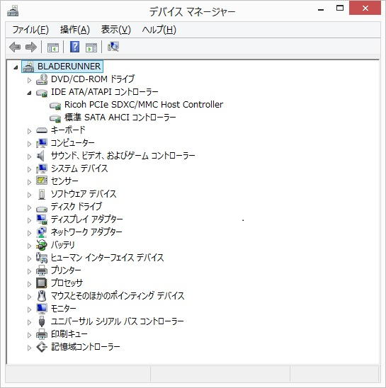
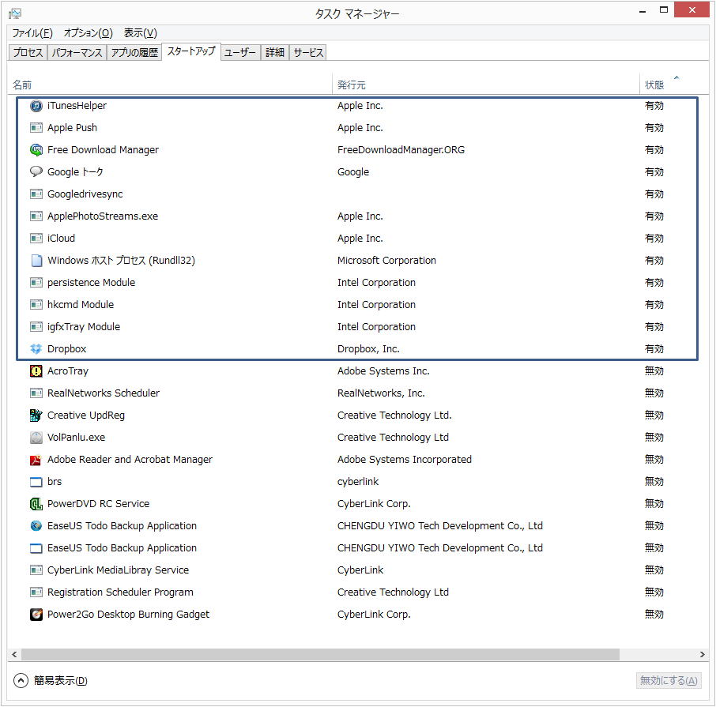
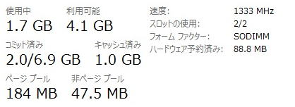
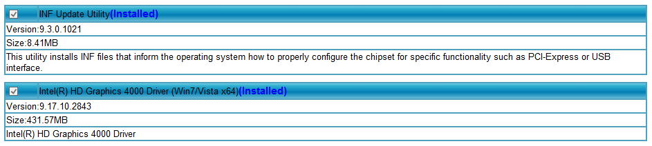

| TOP | weblog | TIPS | Works | リンク |
| 2012-10-30 ダウンロード版Windows8 Proには気をつけなはれ(その２） 音楽師匠が僕以上にWIndows8アップグレードですったもんだしたようです。 Cubase7というムッチャクチャ重い音楽制作ソフトウェアをメインに使われるPCなのでいつもお世話になっているのです少しでも最適化して使ってもらえるようにお手伝いしたいです。 メーカー名と型番をしっか理確認してから記事を書くべきでしょうが、明日以降時間が取れるかどうかわからないので教会ちゃいます。 国産メーカーＰＣに厳しい意見がありますが際悪くしないでね。（東芝Dynabookらしい...) ご提案 東芝のWin８アップグレードアシスタントを見て思ったんですけど、デバイスドライバとアクセサリ系が多そうですね。たぶん相当数のスタートアッププロセスがあり、相当数のバックグラウンドプロセスがあるのではないかと思います。 そしてたくさんのメモリリソースとCPUリソースを消費しているのではと思います。 もちろん、ご本人の意思一つですが、プリインストールソフトはあきらめて、フォーマット後、Windows8 64bitをクリーンインストールしてはいかがでしょうか？ よっぽどヘンキチなチップ以外はWIndows8のPnPが認識してユニバーサルデバイスドライバーがインストールされるのではないでしょうか？ 絶対に必要で認識できないハードがあったとしても米国の東芝ウェブサイトとかワールドワイドレベルで探すと大抵見つかるはずです。 どうしても捨てられないプリインストールがあるのでしたら、これは仕方がないですね... 僕のLenovoノートPC 今年の春ごろ？、購入したノートです。 引き継ぎは一切せず、フォーマット後、クリーンインストールしました。 認識できなかったハードは1つだけ、「Richo PCIe SDHC/MMC Host Controller」  バックグラウンドプロセスです、必要かなと思ったときに「有効」にすれば良いという考え方。  LenovoノートPCのトータル６GBのメモリ状況です。（アイドル時） SQLServer2012ExpressやらIIS+ASP.NTがサービスとして起動してますが、メモリの状況はこうです。  大丈夫かな（１） OSまではインストールできたのですがインストール後ディスプレイドライバを入れた直後に再起動すると問題が発生しました、というメッセージが出てシステムの復旧→失敗→再起動→システムの復旧を繰り返して最終的にはシステムのクリーンアップをしろと言ってきました。 システムは安定していますか？このお話をお伺いする限りIntelの必要なソフト＆ドライバが正しくインストールされていないのではと考えてしまいます。 (1)Intel Chipset INF ユーティリティー （チップセットごとに異なりますが必須、一番最初にインストするドライバ） (2)Intel グラフィックドライバ WindowsVistaからディスプレイドライバ（の一部）はカーネルモードで動作しますので、ドライバの不具合＝OSのクラッシュになってしまいます、が、どんなドライバなのかしら？ ですが、東芝がIntel以外のグラフィックチップを使っているとは考えられず....  大丈夫かな（２） 東芝のWin８アップグレードアシスタントというソフトがあって、そのソフトが今まで入っていたアプリのWin８対応版を自動でダウンロードしてくれるのですが、一部のソフトが差分での提供になっていてインストールができなくなってしまいました。 それが大したことないソフトならよかったのですが、BDプレイヤーだったので、仕方なくまたインストールしなおすことにしました。 （コメント） 先にも書きましたがたくさんのプリインストールソフトがありそうですね。 国産ＰＣのもっとも具合が悪いのが「デバイスドライバが個別にインストールできない」、「付属ソフトが個別にインストール出来ない」事です。 これがなぜ具ワイが悪いかは下の「クリーンインストールがなぜ望ましいか」をご覧ください。 大丈夫かな（３） 問題はいろいろと残っておりまして、例えば「天気」「ゲーム」といったアプリが全く動かなかったり、更新プログラムがうまく当たらずに更新に失敗しましたエラーになったりしております。 アプリについては元々使う予定もなかったのですべて削除してしまいました。 （ゲームはやってみたかったんですけどね〜。） 更新プログラムも、手動で当てたらうまくいきました。 上記現象は同じようにはまっている人が結構いるみたいで 検索すると色々な解決法が書いてあるのですが、決定打となる解決法はないみたいです。（アプリの件は、特に解決法なしでした） （コメント） 「天気」「ゲーム」ってメトロのソフトですよね？ メトロのソフトは大半、Internet接続を必要としますので、ネットワークが切れてたり帯域が狭かったりして、丸がクルクルならなんとなくわかりますが... 「動かない」って、どんなふうに動かないのかな？ これが動かないということはWindows8が正しく動作していないのかもしれません。 ちなみに今日初めてメトロのプログラム起動してみました、全然大したことありません。 ゲームなんてＸＢＯＸばっかだし。 Windows Updateが上手く作動しないのもInternetの帯域のせいかなぁ？ 大丈夫かな（４） 今のところ、うまく動いてくれています。 Cubase7は岡崎さんが前に書いてくださったバグのところがなかなか使いづらくて困っております。 前に使っていたPCよりもかなりスペックが高いPCを使っておりますがリソースの消費具合はあまり変わっていないみたいです。 従来PCで作ったプロジェクトを新PCで開いてみたのですが従来PCと同じくらい食っていました。 もう少し派手なことができるかなぁと思っていましたがだめみたいですね。 （コメント） アプリの作り方にもよりますが、６４bitネイティブになるとリソースの消費は３２bitより多くなります。 WOW６４のディスパッチがなくなるので同じプロジェクトを再生した場合、CPU利用率も上がらなければなりません。 （と思います） Cubaseへのメモリ、CPUリソースの割り当てが上手くいけてないのか、VSTがどうにも64ネイティブしてないのか？ Cubaseにメモリが４GB以上わりあてられるといいんですがねぇ、この辺はわかりません？ WindowsNTあたりまではプロセスの優先度をタスクマネージャから変更（上げたり・下げたり）できたので多少、チューニングの経験はあります。 Winsows8ではできないみたいですね、アプリつくってみよっか？ 優先度変更自体は簡単なんだけど、それを変える自身のアプリを特権モードにするのが面倒だった記憶がある。 もう、ソースのこってないなぁ。 優先度は昔と変わらず４種類だよ。 「RealTime」にすっと、OSがバチッと固まったような記憶がうっすらあるっす。 こういうのウィルスより怖いような気がするけど。 大丈夫でしょう（５） あと、USB3.0にMIDIデバイス（キーボード）を繋いだところ、うまく動作してくれませんでした。なぜでしょうね？ 鍵盤をぽろぽろ弾くと、最初のうちはちゃんと拾ってくれるのですがすぐに無反応になってしまうのです。2.0のほうに繋いだら現象が発生しなくなったので、たぶん3.0のせいだと思うのですが。 （コメント） ケーブルのせいでは？ 知っておきたいUSB3.0まとめ (1/2) に開設がありました。 それともう一つ、気のせいかもしれないのですが、オーディオインタフェース をUSBポートに刺した時、刺すポートによって音が変わりました。 同じ3.0のポートでも例えば左のポートはちょっと音が粗い、とか 右のポートは音が締まるとか、そんな感じです。 不思議ですねぇ。 クリーンインストールがなぜ望ましいか？ ＯＳインストールの王道「クリーンインストール」です。 なぜこれを推奨するかと申しますとＯＳと必要最小限のアプリだけをインストールする事で「レジストリが最も最適化」されるんです。 レジストリはメインメモリに全部展開され、しょっちゅう参照されるので太ったレジストリはパフォーマンス低下の要因になります。 国産ＰＣでは膨大な数のアプリがプリインストールされていますが個別にインストールできず、今回のようにＯＳのバージョンＵＰで膨大なアプリを積んだままの引き継ぎアップグレードしなければならず、おのずとレジストリが厄介な状態になります。 また、コピープロテクトがバンバンにかかっているソフトは暗号化したレジストリハイブを書き込み太らせます。 最近のインストーラー/案インストーラーはだいぶ憂愁になってきて、レジストリも削除してくれますが、それでもある程度もしくは全部レジストリを残します。 Windowsや第３者アプリ（レジストリ最適化などと唄っているアプリ）がそれらのレジストリ解読できるはずはないので当然残したままにしておきます、削除するとアプリが動かなくなるから。 「レジストリ最適化」を唄うソフトは削除しても全く問題ない安全なところだけを削除しますので、実質的な最適化とは言えず脂肪をそのまま抱きかかえることになります、けっかレジストリがブクブクになってしまいます。 真の「レジストリ最適化」はあり得ないのです、あり得たら期間限定の体験版アプリは成立しません。 だって、期間終了したらアンインストしてインストしたらまた使える事になります、インストールした日時は暗号化してレジストリに持っているのです。 =============================================================== ＞大丈夫かな？（１） 私のメールの書き方が悪かったのですが、結局はディスプレイドライバは全く関係なくて、OSのインストール自体が失敗していた、ということだったのです。誤解をさせてしまい申し訳ありませんでした。 システムは今のところ安定しているようです。 ディスプレイドライバも問題ないです。 ＞大丈夫かな？（２） 今回、Win7→Win8へのアップグレード後、すぐにイメージバックアップをとりました。その後、プリインストールソフトの大部分はアンインストールしました。使わないものばかりでしたから…。 今回なぜクリーンインストールのままにしなかったかというと、前述した通りBDプレイヤーが消えてしまったからです。 会社の同僚の人に、BDプレイヤーが意外とお値段が高いという情報を聞いていたので、それが頭の中で引っ掛かっていたんですね。 あとは、Officeを入れるのがちょっと面倒だった、というのもあります。 ものぐさが招いた災い、ですね。 ＞大丈夫かな？（３） 「動かない」状況を説明しますと、例えば「天気」のアプリをクリックするとアプリのマークが表示された後すぐに スタート画面に戻ってしまいます。 ウイルス対策ソフトが悪さをしている例が結構あるようですが私のパソコンは対策ソフトは事前にアンインストールしていたので該当せず、他の事例もいくつか試してみてダメで、面倒くさくなって すべて削除してしまいました。 Windows Updateは、自動インストールではなくて手動でやったら大丈夫でした。 ＞大丈夫かな？（４） これに関しては、今オーディオインタフェースが手元にないので（楽器部屋が一旦外に出ないと辿り着けない場所なので）確認が取れていません。わかり次第またメールいたします。 そういえば、一部の32bitのVSTiがちょっと挙動が変でした。 まぁGUI周りだったので問題なかったのですが…。 他は概ね、32bitVSTiもちゃんと動いてくれました。 ＞大丈夫でしょう（５） これは知りませんでした。ケーブルって違うんですね。 私のケーブルは2.0用のケーブルでした。なるほどですね。 |